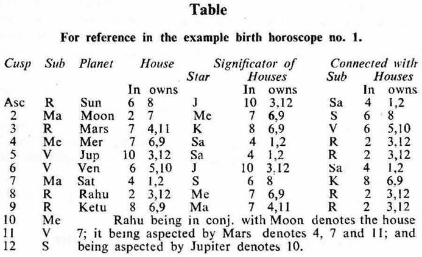

The cuspal sublord of a house indicates whether the matter signified by that house is promised or denied.
If the cuspal sub lord of that house is the significator of that house or any one of the houses under consideration, the matter signified by that house will be promised.
As each house denotes several particular matters, the chief governor of the matter to be judged, may be taken into consideration. If it be connected with the house or any one of the houses under consideration, especially with the star lord of the cuspal sublord, it is desirable.
The principle regarding the significators as explained in the chapter, 'Significators in their order' should always be kept in mind.
If the cuspal sub lord of a house promises the matter of that house, then only during the joint period of the significators of the matter signified by the house or houses under consideration, the results of that matter are experienced; otherwise not.

Ketu being aspected by Moon denotes the houses 2 and 7.
Longevity: 1. If the sublord of the Asc (ascending degree) is the owner of:–
(a) the house 6, 8 or 12 a short life (up to 33 years) is indicated.
(b) the house 1, 5, 9 or 10 a long life (beyond 66 years);
(c) the house 6, 8 or 12 and 1, 5, 9 or 10 a middle life (up to 66 years) is denoted.
Besides, if this sublord is the significator (i.e. in the star of the occupant or owner) of the badhaka and the maraka houses, it is not a good sign for long life.
Likewise, consider the sublords of the 3rd and the 8th cusps also.
2. (a) In the example birth horoscope no. 1, the longevity of the native's mother may be examined. Consider the sublord of the 4th cusp (the Asc for the mother). Its sublord Mercury is the owner of the 6th counted from the 4th cusp. It is in the star of Saturn which is the owner of the badhaka house 11 counted from the 4th cusp. So the sublord of the mother's Asc (Mercury) is the significator of the badhaka house. Hence the longevity of the native's mother is short.
(b) Venus is the sublord both of the 8th and the 3rd cusps counted from the 4th cusp. It is in the star of Jupiter which is the owner of the maraka house 12 and which is the occupant of the maraka house 7 counted from the 4th cusp. So Venus is the significator of the maraka houses for the mother. Hence the life of the native's mother is short.
(c) The native's mother died on 1-11-1923 during the joint period of Ketu, Venus and Rahu the significators of the badhaka and maraka houses as the counted from the 4th cusp.
Health: If the sublord of the Asc (ascending degree) is in the star of the occupant of the house 1 or 11, health is normal.
If it is in the star of the occupant or owner of 6 (sickness or disease), 8(danger to life) or 12(bed ridden sickness), it is not good for health.
In the example birth horoscope no. 1 the sub lord of the Asc is Rahu. It is in the star of Mercury owning 6 and occupying 7. So it becomes the significator of 6 and 7 (maraka). Hence the native will suffer from disease or sickness.
Disease: If the sublord of the 6th cusp is in the star of the occupant or owner of 6 or 1 the native may suffer from disease.
(a) In the example birth horoscope no. 1 the sublord of the 6th cusp is Venus. It occupies the 6th (there is no planet in its star, so it is the strong significator of 6). It is in the star Saturn owning the Asc. Hence it is the significator of 1 and 6. So the native will suffer from disease.
(b) The native became susceptible to asthamatic condition since 1951 in the joint period of Sun and Rahu. The sub periods of Moon, Rahu and Saturn indicate ill-health, because they are the significators of 6 and connected with 1, 8 and 12. In fact they proved evil to the native for health.
Accident: If the sublord of the Asc or of the 8th cusp is in the star of the occupant or owner of the 8th or 12th the native will meet with an accident.
If the sub lord is in the star of the occupant or owner of 8, 7 or 2 the accident will prove fatal.
If it is in the star of the occupant or owner of 2 or 7 and 11 the native will survive.
In the example birth horoscope no. 1 the sub lord of the Asc and of the 8th cusp is Rahu. It is not in the star of the occupant or owner of 8 or 12. So the native will not meet with any accident in life.
Education: If the sub lord of the 4th cusp is Mercury or Jupiter; or if it is in the star of the occupant or owner of 4, 9 or 11 and if its star lord is connected with Mercury and/or Jupiter the native will get academic qualifications.
(a) In the example birth horoscope no. 1 the sub lord of the 4th cusp is Mercury owning 9. Moreover this sub lord is in the star Saturn which occupies the 4th, so it is the significator of the 4th and its star lord (Saturn) aspects both Mercury and Jupiter, hence the star lord (Saturn) is connected with them. The native will therefore get academic qualifications.
(b) The native could receive education during the periods of Mercury, Ketu and Venus the significators of 4 and 11 up to 1941. He got degrees in the sub periods of Moon and Jupiter the significators of 4 and 9 during the period of Venus.
Building: 1. If the sub lord of the 4th cusp is in the star of the occupant or owner of 4, 11 or 12 and Mars or Saturn is connected with this house, the native will have his own building.
(a) In the example birth horoscope no, 1 the sub lord of the 4th cusp is Mercury. It is in the star Saturn which is in the 4th. So it is the significator of the 4th. Hence a residential house of his own is promised to the native.
(b) Mercury owns 6 (loan) and occupies 7 (Government or Co-operative Society). Its star lord Saturn occupies 4 (land or building), owns 2 (money) and 1 (self). Its sub lord Rahu occupies 2; Rahu is in conj. with Moon owning 7, is aspected by Mars owning 4 and 11, is aspected by Jupiter owning 12 (investment).
Mercury is the source of an event i.e. loan from Government or Co-operative Society will be the source.
Its star lord Saturn indicates the results regarding money and land or building for self.
Its sub lord Rahu being connected with 2, 4, 7, 11 and 12 (the same matters of the star lord) shows that the results will be favourable.
In short, Mercury indicates that the native will get money as loan from Govt. or Co-operative Society, and will invest it in constructing a building for him,
(c) The native could occupy his newly constructed building during the joint period of Moon, Jupiter and Mercury the significators of 4, 11 or 12 in 1959.
2. If the sub lord of the 10th cusp is the significator of 3 or 10 the native will be required to sell his building.
In the example birth horoscope no. 1 the sub lord of the 10th cusp is Mercury. It is not in the star of the occupant or owner of 3 or 10. So it is not the significator of 3 or 10. Hence the native will not be required to sell his building.
Marriage: If the sub lord of the 7th cusp is the significator of 2, 7 or 11 the native will marry.
If it is the significator of 1, 6 or 10 the native will not marry.
(a) In the example birth horoscope no. 1 the sub lord of the 7th cusp is Mars. It occupies the 7th. It is in the star Ketu; Ketu represents Moon owning 7, Mercury in 7 and its star lord Mars owning 11 and in 7; thus Ketu has to give the results of 7 and 11. Hence Mars is the significator of 7 and 11. So marriage is promised to the native.
(b) The native got married on 13-12-1937 during the joint period of Venus, Rahu and Jupiter the significators of 2, 7 and 11.
Children: If the sub lord of the 5th cusp is the significator of 2, 5 or 11 child birth is promised.
If it is the significator of 1, 4 or 10 child birth is not promised.
In case of females the 5th house and in case of males the 11th house should be examined first.
(a) In the example birth horoscope no. 1 the native is male. The sub lord of the 11th cusp is Venus. It is the owner of the 5th. There is no planet in its star and the 5th house is vacant. So it is the strong significator of the 5th.
Further Venus is in the star Jupiter the chief governor of child birth and Jupiter aspects the 5th cusp. Hence Venus promises child birth.
(b) The sub lord of the 5th cusp is also Venus.
(c) The birth of children took place during the joint period of the significators of 2, 5 or 11 Venus, Mercury and Mercury in 1946; Venus, Ketu and Mars in 1949; Sun, Jupiter and Ketu in 1952; and Moon, Moon and Jupiter in 1956.
Profession/Service: If the sub lord of the 10th cusp or the 6th cusp is the significator of 2, 6 or 10 the native will earn money either in profession or service.
(a) In the example birth horoscope no. 1 the sublord of the 10th cusp is Mercury. It is in the star Saturn owning 2. So it is the significator of 2. Hence the native will earn.
(b) The sublord of the 6th cusp is Venus. It occupies the 6th and owns the 10th. There is no planet in its star. So it is the strong significator of 6 and it being in the star Jupiter in 10, is the strong significator of 10 also. Hence service is promised.
(c) The native got his first employment during the joint period of Venus, Mars and Rahu the significators of 2, 6, 10 or 11 in 1936.
Lottery: If the sub lord of the 11th cusp is in the star of the occupant or owner of 2, 6 or 11 and not in the star of the occupant or owner of 8, 12 or 5 (i.e. 2, 6 and 11 from the 7th – gain to the opposite party) and if it is connected with the house 3 the native will gain through lottery.
In the example birth horoscope no, 1 the sub lord of the 11th cusp is Venus. It is not in the star of the occupant or owner of 2, 6 or 11.
On the contrary it is the owner of 5, the house 5 is vacant, there is no planet in the star of Venus, so Venus is the strong significator of 5.
Venus is in the star of Jupiter owning 12 which is vacant. So it is the strong significator of 12.
Hence there is no likelihood of winning lottery.
‘Significator’. The phrase ‘a particular planet is the significator of a particular house is commonly used throughout the book. In stellar astrology a planet has to give the results of its star lord. So the term ‘significator’ in its strict sense is to be understood as a planet in the star of the occupant or owner of a house under consideration.
1. For judging any matter in the horoscope pertaining to any particular house, bear in mind the general principle that a planet gives the results of its star lord.
2. Give importance to the cuspal sublord of the house to be judged; treat it as an ordinary planet.
3. Note its star lord, note the sign and the house occupied by the star lord.
4. Remember the general rule that each sign corresponds to a particular house e.g. Aries to the 1st house, Cancer to the 4th and so on. Also bear in mind that each house corresponds to a particular sign e.g. the 1st house represents Aries, the 6th house to Virgo and so on.
5. Remember the characteristics e.g. personal appearance, disposition, disease, occupation and matters governed or dominated by each sign and planet.
6. Combine the influence of the star lord, that of the sign occupied by it and also of the house occupied by it suitably as the case may be; and follow the suit in respect of the cuspal sublord also.
7. The strength of the cuspal sub lord of a house should also be examined for affairs or matters of that house,